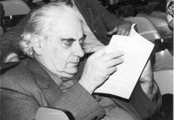

Vida
Mário Schenberg (1914 – 1990) nascido em Recife, de uma familia de imigrantes judesus, foi amigo e incentivador de poetas e artistas, e um dos críticos de arte mais respeitados do país. Para o pintor Volpi, em 1944, escreveu a apresentação do catálogo de sua primeira exposição, enquanto Haroldo de Campos dedicou-lhe um poema e Gilberto Gil uma música. Porém, Schenberg foi também, segundo Einstein, “uma das dez personalidades da física do século 20” (Leão, 2014). Publicou mais de 100 artigos em revistas científicas sobre raios cósmicos, astrofísica, mecânica quântica e geometria, entre tantos outros assuntos, e trabalhou com os mais importantes físicos de sua época, como Fermi, Pauli e Gamow. O físico brasileiro assinava seus trabalhos como Mário Schönberg. Acima de tudo, Schenberg foi capaz de unir de tudo um pouco. “Não gosto muito de separar as coisas da vida” (Schenberg, 1984, p. 145), ele dizia. “Acho que tudo é uma coisa só. A vida não se separa em ciência, em atividade política, em atividade filosófica, ou outras coisas” (idem).
Processo Urca
Mário Schenberg teve importantes contribuições em astrofísica, particularmente na teoria de processos nucleares na formação de estrelas supernovas. Em 1940, trabalhando com George Gamow, batizou o conhecido processo Urca: o ciclo de reações nucleares no qual o núcleo perde energia por absorver um elétron e re-emitir uma partícula beta e um par neutrino-antineutrino, o que leva à perda de pressão interna e como consequência à ocorrência de um colapso e explosão na forma de uma supernova. A contribuição de Schenberg corresponde à proposição da presença dos recém descobertos neutrinos, que drenam parte considerável da energia da estrela. Urca era o nome de um cassino no Rio de Janeiro e foi utilizado para nomear o processo por George Gamow, pois Schenberg uma vez brincou dizendo a ele que "a energia desaparece no núcleo de uma supernova tão rápido quanto o dinheiro no jogo de roletas" durante uma visita ao cassino da Urca.
Carreira Politica e Fa
Em paralelo com sua atuação acadêmica, Schenberg sempre participou ativamente da discussão dos problemas político-econômicos do Brasil. Iniciou em São Paulo a campanha O Petróleo é Nosso, lutou pela defesa dos minérios nucleares do país e esteve envolvido nos debates sobre as centrais nucleares, mostrando-se contra o acordo Brasil-Alemanha de cooperação nuclear.[13] Foi eleito suplente de deputado estadual para a Assembleia Constituinte do Estado de São Paulo, pelo Partido Comunista Brasileiro (PCB) em 1946. Ao assumir o cargo de deputado estadual, revelou-se, nessa época, um orador respeitável, que chegou diversas vezes a inverter a posição dominante da bancada. Em 1947, sob a liderança do economista e empresário Caio Prado Júnior, a bancada aprovou o Artigo 123 da Constituição do Estado de São Paulo, instituindo os fundos de amparo à pesquisa no estado para impulsionar o seu desenvolvimento científico e tecnológico. Esse projeto levou mais tarde à concepção da Fundação de Amparo à Pesquisa do Estado de São Paulo (FAPESP).[16] Em 1948, foi cassado e vítima de perseguições na universidade, como os outros membros da bancada comunista, liderada por Caio Prado Júnior
Video sobre Mário Schenberg